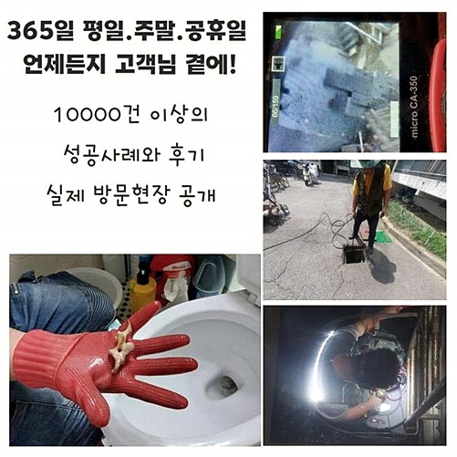
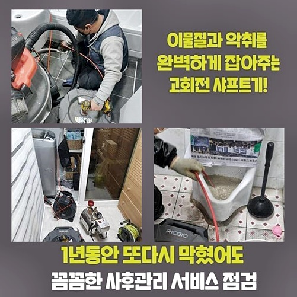
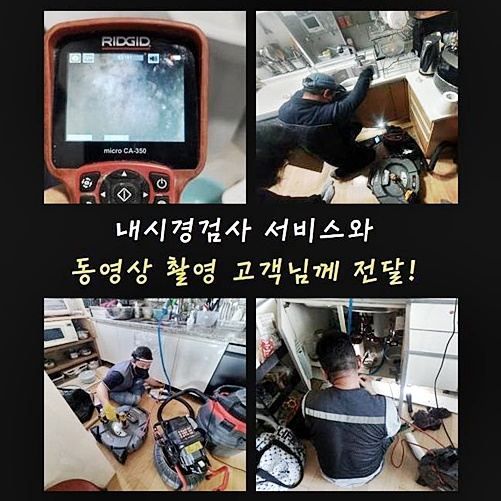
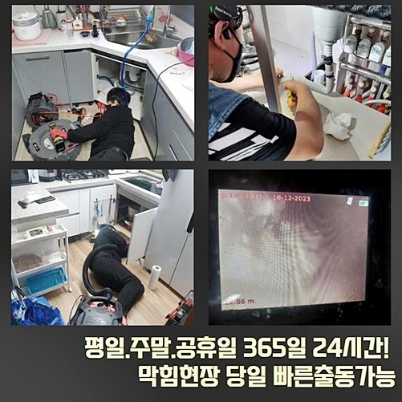
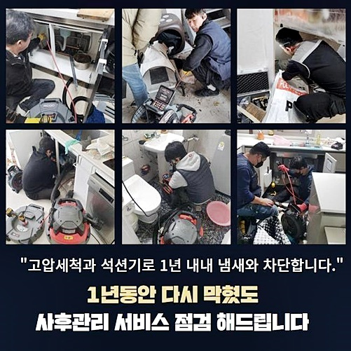
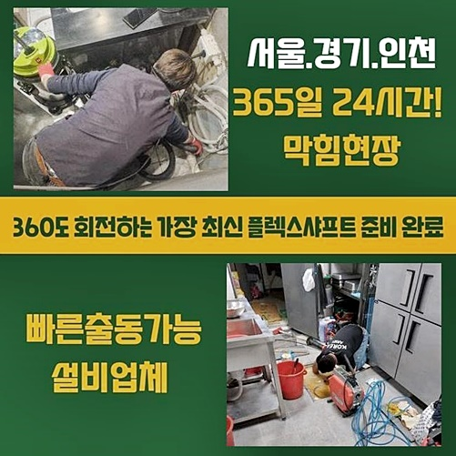

🏠 용산 후암동화장실역류 한강로3가 배관뚫기 부속수리
용인시 처인구 배관막힘 전문 시공 후기

📋 작업 개요
- 위치: 용인시 처인구, 수원시 영통구, 화성시 동탄
- 서비스 유형: 배관막힘, 내시경점검
- 작업 일시:
- 업체명: 하수구수사대 (010-5615-2118)
🔍 문제 상황
용산 후암동화장실역류 한강로3가 배관뚫기 부속수리
하수관이 막혔을 경우 빠르게 현장으로 이동하여 오류가 난 설비와 답답한 심경을 풀어드리는 업체 인사드리겠습니다
큰 오류없이 물이 원활히 이동하던 하수배관이 예고도 없이 꽉 막혀버린 모습이라 여러 수단을 활용해서 관통하려 했으나 실패를 하셨나요?
이런 답답한 경우라면 하수전문가인 저희에게 해결을 위임해 주시면 아무 걱정없으시게 물길을 확 열어드리니 시간 상관없이 불러주세요
가정집에서 하수구가 트러블이 생긴다면 오염원이 자리했을 상황이 대다수입니다
오염물질이 과량으로 채워지기 이전인 상태일 시 누구라도 적용이 가능한 녹이는 약물이거나 압박감을 주는 막대기 등 비교적 평이한 방식만 걸어줘도 물길이 다시 열릴 수도 있어요
통로 지름에 가득 자리하거나 뭉쳐서 경화 단계가 이뤄져 버린 수준이면 스스로의 힘으로는 해결이 어렵다고 봅니다
초기 단계 이상이면 전문 전문적인 도움을 받아서 제대로 개선을 해보셔야 하는데요
얼마전 아파트에 거주하시는 의뢰인분이 잘 돌아가던 싱크시설에 오류가 생겨서 생활이 어렵다는 연락을 받고 작업지로 출동을 하게 되었는데요
하수구가 처음 고장나면 반복적인 막힘이 찾아올 경우가 상당히 많아요
내부에 축적되어온 찌꺼기로 폐쇄가 된 현장이면 완성도 높게 정돈을 거쳐주지 않으면 오염물의 양이 늘어가며 새로운 문제를 야기합니다
아파트 시설 내에서 일어나는 작업건들을 놓고 보면 복합적인 사안이다 싶은 건은 잘 보이지 않으니 마음이 무겁지는 않은데요
절대 간과하지 않고 뜻밖의 어려움이 생겨버린 현장일 수 있으므로 다양한 변수를 대비하고 있어요

🔎 원인 분석
💡 전문가 진단: 정밀 진단 장비를 사용하여 슬러지의 고착 여부를 판명하고 타격/세척 작업을 실시했습니다.
하수구를 새것처럼 청소해 드리려면 흡입하는 석션기와 배관카메라 및 샤프트같은 다수의 장비가 동원되어야 하는데요
저희가 갖춘 전체 기기들을 빠짐 없이 챙겨서 내방을 하니 안심하셔도 됩니다
석션기의 경우는 청소기랑 거의 동일하다고 보시면 되는데 고체와 액체를 동시에 처리하는 습식청소기라 보시면 됩니다!
약간의 이물질만 있다면 석션장비를 돌려서 흡수를 해주고 나면 고인 물이 빠져나가는 단순한 상황들도 있어요
이런 초기 케이스들은 적은 편이고 상태가 심각한 곳들이 과반수를 훌쩍 넘습니다
석션장비는 고형화된 이물질 제거를 할 수 있는데다가 내부에 고인 물들까지도 싹 빼내줄 수 있는데 관로 자체를 비워야만 배관을 찍는 내시경기기를 진입시킬 수 있게 됩니다
어디가 막혀있는지 알려주시면 바로 막힌 시설의 여기저기를 하나하나 눈으로 뜯어 봅니다
뿌옇게 물도 고여있었지만 하부장도 살펴봤더니 바닥과 주름관 부근에 역류의 흔적까지 관찰됐어요
적당량의 물만 내려보내면 느릿느릿하게 빠져나가긴 하지만 한번에 물바구니를 통째로 부었을 때 역행이 발생한다면 끈적한 이물질들이 많다는 단서로 봐도 무방해요
긴 관로를 따라 이물질이 붙어 물의 경로를 가로막아서 밑이 아닌 위로 터져올라와요
제일 먼저 석션기 작업을 스타트를 끊어줬는데 고형화된 물질은 없었고 혼탁한 수분만 탈출했어요
역행은 쭉 이어지는 상황이었고 고인 물은 고스란히 정체해 있었습니다
시야를 가리는 물기를 소거했으니 실제 현황을 살펴보면서 근원부를 발굴해 주기 위하여 내부 사정을 밝혀줄 내시경을 깊숙하게 당도시켜 주었습니다

🔧 작업 과정
호스를 내리기 시작한 지 오래되지 않았는데도 손쉽게 문제되는 측면을 발굴해 냈습니다!
잔뜩 뭉친 슬러지가 너무 가득 차올라서 가까운 주변부 역시도 확인하기가 어렵더군요
그정도로 중증인 시설이라서 하수가 유연하게 흘러갈리가 전혀 없는 컨디션이었죠
물의 이동을 정상화시켜주려면 적절한 청소가 이뤄져야 했죠
장기간 머무르다가 응집력이 좋아진 대량 슬러지의 경우는 작은 조각으로 분리해서 흡입 작업을 거쳐야 하므로 모터의 힘으로 회전하는 먼저 기름진 덩어리를 조각내는 과정을 거쳤습니다
장비의 헤드 부근에 자리한 사슬이 움직이면서 잘게 잘려질 수 있도록 지속적으로 스케일링을 해주었어요
강한 장비를 돌리기는 하지만 디테일한 것까지 관찰하면서 작업을 이어가므로 배관자체가 크랙이나 부서짐이 생기지 않아요
입문한지 얼마 안 된 사람이 아닌 전문가가 상황에 맞게 진행해 드리고 있으므로 노심초사하실 필요는 없습니다
많은 성공 사례를 보유했으며 관련 지식이 많기 때문에 풀어나가기 까지의 문턱이 제법 높은 상황에서도 당황하지 않고 솔루션을 적용해 드리죠
현황을 제대로 분석한 후 맞춤형으로 뚫고 있으며 남은 잔량없이 처리하는 데에 혼신의 힘을 다합니다
손상없는 시공을 위하여 내시경으로 작업이 이뤄지는 배관 속에 추가로 발견된 문제는 없는지 계속 주시하고 있습니다
이러한 스케일링을 거쳐서 샤프트로 할 일이 끝나면 다시 습식청소기를 넣어서 적당한 크기로 썰린 노폐물을 원활하게 소거해 줍니다
다음 단계로 넘어가려고 긴 샤프트의 노즐을 바깥으로 빼보니 엉망으로 끈적한 기름쓰레기가 거머리처럼 붙어있더라고요
밑으로 더 진출하면서 슬러지를 파쇄하고 끌어당기는 일련의 행위를 되풀이하며 정화작업을 거치다 보면 어느순간 막힘 사안이 극적으로 좋아지게 돼요
이물질이 제법 오래 물성이 변하여 악취도 온 실내에 가득 풍겼어요
기름기 투성이의 찌꺼기를 흔적도 없이 없애준다면 냄새유발 인자가 없어져서 냄새도 자연스럽게 해결됩니다
작은 조각이라도 남아 있지 않도록 완성도에 중점을 두면서 배관 환경을 정비해 드립니다
정말 막대한 양의 이물질이 벌써 제거되어서 초창기 막혀있던 때 보다는 다른 배관이라해도 믿을 정도입니다
파이프라인의 봉인된 모든 부분들을 없애준 후이니 다음은 약간 남은 기름때들을 석션으로 쭉 빨아당겨서 정리정돈해 주면 끝입니다
진짜 마지막으로 내시경을 통해 개선 상태를 관찰해 보니 작은 틈도 보이지않던 하수구가 언제그랬냐는 듯 나아진 모습을 눈으로 확인하게 됐네요
고객님 역시 나아진 모니터링도 하고 설명을 들으시곤 놀라움을 금치 못하셨네요!


✅ 작업 완료
재발이 생기지 않도록 끊임없이 수십 분에 거쳐 하수구 정돈을 해드리니 파이프의 내부 상황은 시야가 훤히 트일 만큼 나아지고 냄새도 전혀 없었죠
싱크대 수도를 틀어서 물을 킨 후 테스트를 발동시켜 주었는데 다행스럽게도 막히는 기색 없이 배수가 원활한 모습이었죠
물을 고이게 했다가 한순간에 부을 때도 문제가 없는지 검사를 꼼꼼하게 수행을 해드렸네요
제법 많은 물의 양을 폐수했음에도 불구하고 전혀 물의 역류 증세가 없이 물이 통하여 흐르더라고요
이번 작업에 사용되었던 기계를 뽑아서 정리하고 오염물이 튀었을 주변부까지 잘 쓸어내고 닦아드리고 철수를 하게 됐네요
하수구의 막힘으로 인하여 어떻게 해야할지 막막하시다면 접수만 가볍게 해주시면 원하시는 시간대에 방문드려 꼼꼼한 분석과 실무 능력으로 책임지고 도맡겠습니다



⚠️ 하수구 배관 막힘 예방 및 관리 가이드
- ✅ 머리카락, 비닐, 물티슈 등 물에 분해되지 않는 이물질은 절대 흘려보내지 마세요.
- ✅ 기름기 많은 식기는 설거지 전 키친타올로 먼저 기름때를 닦아내세요.
- ✅ 주기적으로 배수구에 뜨거운 물을 가득 부어주어 유지방 고착을 방지하세요.
- ✅ 작업 후 1년 이내 재발 시 무상 A/S 보증 서비스를 제공합니다.
💡 핵심 정리
- 확실한 장비 작업(내시경 점검 및 샤프트 스케일링)으로 원인을 뿌리 뽑습니다.
- 작업 후 1년 이내에 동일한 부위 재발 시 100% 무상 A/S 서비스를 보장합니다.
- 서울 · 경기 · 인천 전 지역에 24시간 언제든 긴급 출동할 수 있도록 항시 대기 중입니다.
❓ 자주 묻는 질문 (FAQ)
🚨 용인시 처인구 배관막힘 문제로 고민이신가요?
정확한 원인 진단과 확실한 시공으로 재발 없는 해결을 약속드립니다.
24시간 긴급 출동 | 서울 · 경기 · 인천 전지역 | 1년 내 재발 시 무상 A/S